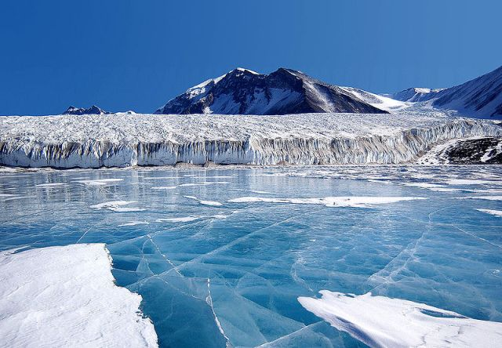
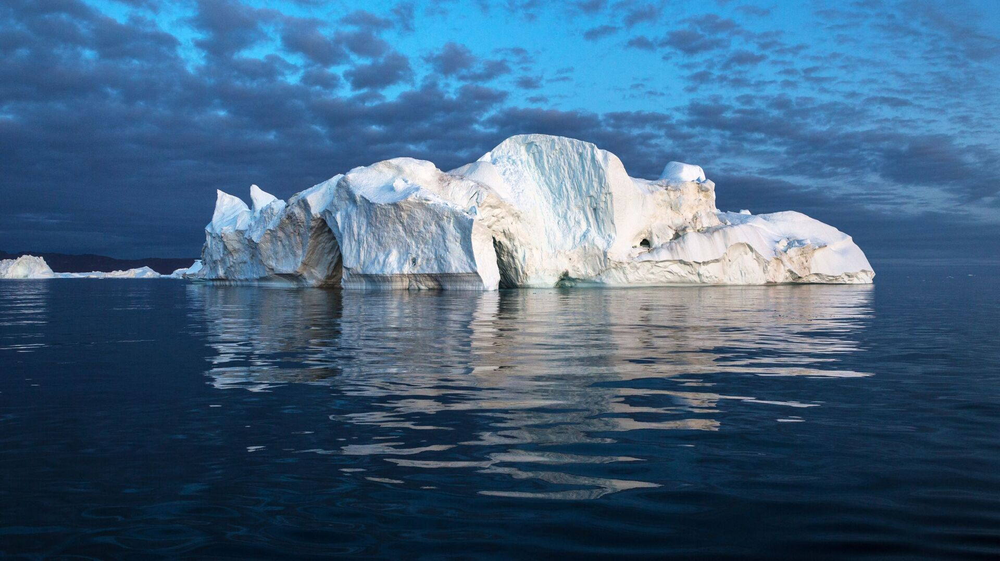
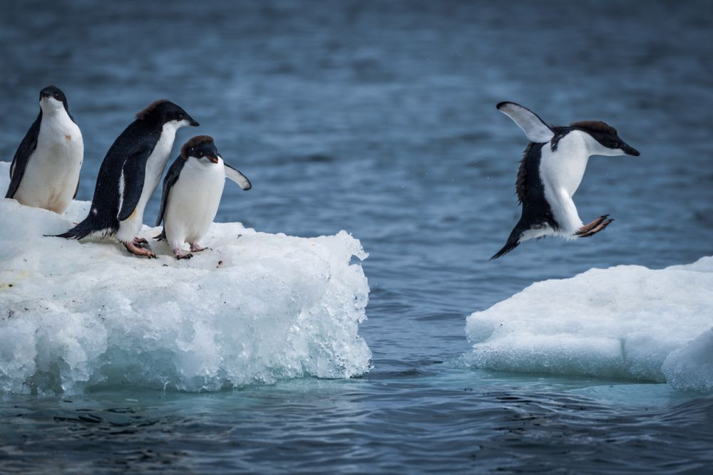
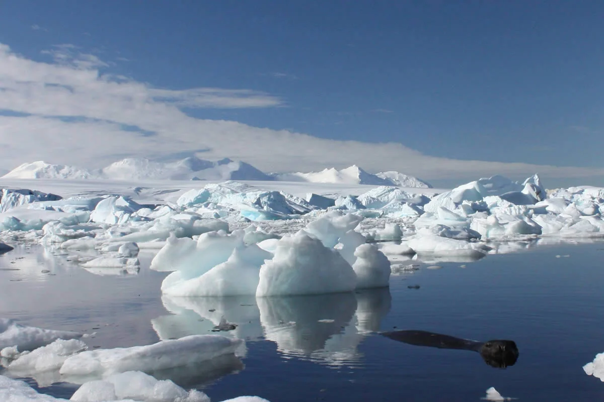

Warming
Temperature increase:
On average, Antarctica is warming more slowly than the Arctic, but some regions of the continent, such as the Antarctic Peninsula, are warming much faster. Since the late 20th century, temperatures on the Peninsula have increased by several degrees, causing glaciers to melt and significant changes to local ecosystems.Rising sea levels:
Antarctica contains about 60% of the Earth’s fresh water in the form of ice. If only part of Antarctica’s glaciers were to melt, it would cause catastrophic sea level rise. Scientists estimate that if the West Antarctic ice sheet were to melt completely, sea levels could rise by 3–5 meters. Threats to the global economy and population: Rising sea levels pose a threat to coastal cities and island nations around the world. It could lead to population displacement, disruption of infrastructure, and economic losses in coastal countries.Causes of Antarctica Warming:
- Global Greenhouse Gas Emissions: The main cause of climate change is the increase in emissions of carbon dioxide and other greenhouse gases from human activities (industry, transport, agriculture). - Ocean Warming: Oceans absorb much of the heat caused by climate change and transfer this heat to ice sheets, causing them to melt.Melting glaciers
The melting of glaciers in Antarctica is one of the most alarming environmental issues of our time. The Antarctic ice sheet contains about 60% of all fresh water on the planet, and its melting directly affects global sea levels and climate systems.
The main causes of melting glaciers in Antarctica:
Global warming:
The increase in the average temperature of the Earth leads to warmer oceans, which accelerates the melting of coastal glaciers and ice shelves.Warming oceans:
Warm ocean currents undermine glaciers from below, which accelerates their destruction.Greenhouse gases:
Rising levels of carbon dioxide and other greenhouse gases intensify the effects of global warming, which negatively affects the ice sheet.The effects of melting:
Rising sea levels:
Even partial melting of Antarctica's glaciers is expected to lead to a rise in sea levels by several meters, flooding coastal cities and island nations.Changing ocean currents:
Melting glaciers could change ocean currents and climate patterns, affecting weather around the world.Biodiversity loss:
Changes to Antarctica’s ecosystems could wipe out the continent’s unique animal and plant species.Recent research:
Antarctica’s glaciers are melting faster than previously thought, according to scientists. Research has shown that the western part of the continent is most vulnerable to change, especially the Thwaites and Pine Island glaciers, which are considered “points of no return.” If their melting is not stopped, it could be catastrophic for the entire world.Due to its immense size, the ocean’s carbon reservoir is roughly 20 times larger than the combined atmosphere and land reservoirs. The eventual fate of our atmospheric carbon emissions will be primarily in the oceans, as the ocean has absorbed roughly 40% of fossil fuel carbon dioxide (CO₂) since the beginning of the industrial era. How do we understand the details of how the ocean takes up carbon? It isn't easy — the ocean is vast, deep, and continually in motion. Even with ocean-observing satellites that orbit Earth 24/7, data from below the ocean surface is sparse. Data-driven estimates of how much carbon dioxide the ocean is absorbing (the so-called “ocean carbon sink”) have improved substantially in recent years. However, computational ocean models that include biogeochemistry continue to play a critical role as they allow us to fill critical gaps in data and understand the individual processes that control ocean carbon storage. The ideal scenario is a combination of the above two methods, where data are ingested and then used to improve a model's fit to the observed ocean, also known as “data assimilation”. While the physical oceanographic community has made great progress in developing data assimilation systems, for example, the Estimating the Circulation and Climate of the Ocean (ECCO) consortium, the biogeochemical community has generally lagged behind. The ECCO-Darwin model represents an important technological step forward as it is the first global ocean biogeochemistry model that (1) ingests both physical and biogeochemical observations into the model in a realistic manner and (2) considers how the nature of the ocean carbon sink has changed over multiple decades. As the ECCO ocean circulation estimates become more accurate and lengthen in time, ECCO-Darwin will become an ever more accurate and useful tool for climate-related ocean carbon cycle and mitigation studies. This dataset contains global monthly averages of CO₂ flux between the ocean and the air from version 5 of the ECCO-Darwin model. The data are available at ~1/3° horizontal resolution at the equator (~18 km at high latitudes) from January 2020 through December 2022.
What can be done?
Reducing carbon emissions: Global efforts to reduce greenhouse gas emissions will help slow down warming and, consequently, the melting of glaciers. International cooperation: Coordinated action by governments and scientific organizations is needed to monitor the health of glaciers and develop measures to conserve them. Energy innovation: Switching to renewable energy sources can also help reduce human impacts on the climate.Changing Ecosystems
Ecosystem changes in Antarctica are linked to global climate change, which is affecting this unique and isolated continent. Antarctica is one of the harshest and most sparsely populated regions on Earth, but its ecosystems play an important role in maintaining global ecological balance. Changes in its ecosystems can have a significant impact on climate processes and biodiversity.
The main causes of ecosystem changes in Antarctica are:
Global warming:
Rising temperatures on the continent and in the adjacent waters of the Southern Ocean have a direct impact on the flora and fauna of the region. The ice cover is shrinking, creating new living conditions for both marine and terrestrial organisms.Melting glaciers:
Accelerated melting of glaciers is changing the habitats of animals such as penguins, seals and seabirds, which depend on stable ice cover for reproduction and hunting.Changing ocean conditions:
Warming oceans are changing the structure of food webs, affecting marine organisms, including krill, the main food source for many Antarctic species.Invasive species:
As the climate warms, the risk of invasive species increases, which can disrupt local ecosystems and displace native species.Impact on marine ecosystems:
Krill and fish:
Krill are a key element of the Antarctic food chain, feeding whales, seals, penguins and other marine animals. Warming waters and changing ice cover threaten krill populations, putting the entire ecosystem at risk.Seabirds and penguins:
Changes in ice conditions and food availability (such as fish and krill) are affecting the behavior and numbers of Antarctic seabirds and penguins. Some species, such as the emperor penguin, are highly dependent on ice platforms, and their loss could lead to dramatic population declines.Impact on terrestrial ecosystems:
Mosses and lichens: Life on land in Antarctica consists mainly of mosses, lichens and some microorganisms. As climate change and temperatures rise, their range may expand, but competition for resources will also increase. Increased humidity: Increased precipitation in parts of Antarctica is changing the structure of terrestrial ecosystems. Some areas that were previously too harsh for life are now being colonised by vegetation and microscopic organisms.Ecosystem changes:
Threats to biodiversity:
Changes in conditions may cause some species to become extinct, while invasive species may take their place. This will alter the entire ecosystem and potentially lead to the loss of unique life forms.Disruption of global climate systems:
Antarctic ecosystems play a key role in regulating climate, particularly through processes related to ocean current circulation and the reflection of sunlight (albedo). Changes to these ecosystems could accelerate global warming.Actions to protect Antarctic ecosystems:
Research:
Strengthening monitoring of ecosystem and ice conditions will help to better understand the dynamics of change and develop strategies to protect them.Protected areas:
Establishing and expanding protected areas on land and in the ocean to minimize the impact of human activities and preserve biodiversity.Reducing greenhouse gas emissions:
Global efforts to reduce carbon dioxide emissions can slow warming, giving Antarctic ecosystems more time to adapt.Impact on climate
The impact of climate change on Antarctica is becoming increasingly evident and widespread. Antarctica, which plays an important role in global climate processes, is undergoing rapid changes as a result of global warming and changes in atmospheric and oceanic conditions. These changes in the climate of Antarctica have a significant impact on both the continent and the entire planet.
The main drivers of climate change in Antarctica are:
Global warming:
Rising average global temperatures are changing the climate of Antarctica, which affects glaciers, the ice sheet, and ecosystems.Changing atmospheric circulation:
Changing atmospheric currents, such as westerlies, increase the impact of warm air masses on the continent and contribute to the melting of glaciers.Warming oceans:
The oceans around Antarctica absorb much of the heat caused by greenhouse gases, causing water temperatures to rise. This, in turn, undermines glaciers from below and accelerates their destruction.Ozone Hole:
Although the ozone hole has been shrinking in recent years, its existence has affected the wind circulation in southern latitudes, which is also changing the climate processes in Antarctica.Effects of the impact on Antarctica's climate:
Melting glaciers: Antarctica's ice sheet is shrinking, especially on the western part of the continent, where warming has had the greatest impact. Glaciers such as Thwaites and Pine Island are on the verge of collapse, and their melting could cause significant rises in global sea levels. Rising sea levels: If the melting of the Antarctic ice sheet continues, it is predicted to cause sea levels to rise by several meters. This would flood coastal regions around the world, threatening millions of people. Changing ocean currents: Melting glaciers and adding fresh water to the oceans change the density of ocean waters, which affects the global circulation system of ocean currents such as the Westerlies and the Antarctic Circumpolar Current. These currents play a key role in regulating the Earth's climate. Lower albedo: Antarctica's ice surfaces reflect much of the sun's energy, helping to cool the planet. A decrease in ice cover reduces this effect (albedo), which helps accelerate global warming. Increasing extreme weather events: Climate change in Antarctica could lead to increased extreme weather events such as hurricanes, storms, and droughts in other parts of the world, as Antarctica's climate processes directly influence global atmospheric and oceanic systems.Impact on ecosystems:
Penguins and marine life: Climate change is reducing the numbers of penguins and other marine life that depend on ice for hunting and breeding. Melting ice is reducing the range of these animals and reducing food supplies such as krill. Habitat shift: Some species are adapting to new conditions by migrating to colder areas, but others may become endangered due to their inability to adapt to changing climate conditions.Future projections:
Continued warming: If global warming is not slowed, the average temperature in Antarctica will continue to rise. This will cause even faster melting of glaciers and further rise in global sea levels. Slowing ocean currents: If melting continues, the slowing of global ocean currents could lead to serious climate impacts in different regions of the world, including dramatic changes in precipitation, temperatures, and weather patterns. Mitigation and adaptation measures: Reducing greenhouse gas emissions: The main way to slow climate change in Antarctica is through global efforts to reduce emissions of carbon dioxide and other greenhouse gases. International cooperation: Antarctica is protected by international agreements such as the Antarctic Treaty and requires coordinated efforts to monitor climate change and take action to mitigate it. Innovative technologies: Developing new technologies to monitor glacier changes and predict climate change will help us better adapt to these processes."Some data collection from Nasa GHG Center sources"
Contact the developer
Contact me on social network: